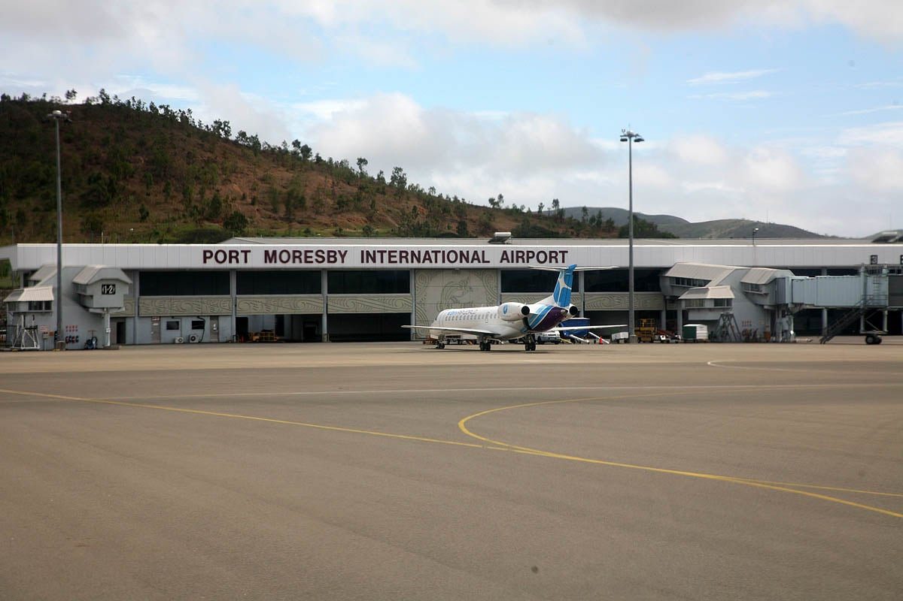
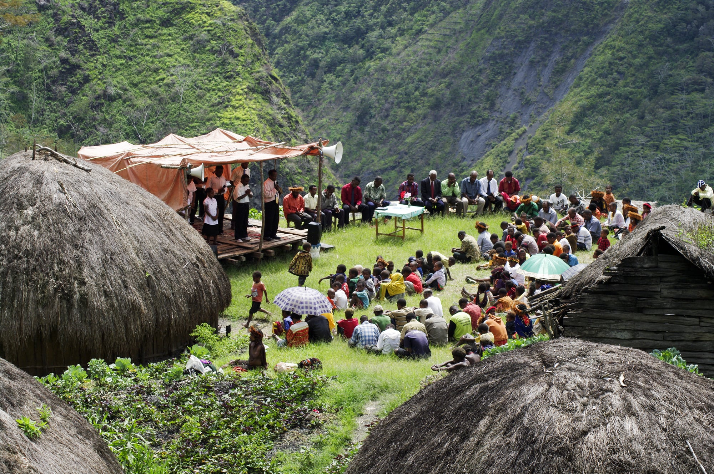

Future Scenarios for Papua New Guinea
Until recently, visitors making their way to the immigration checkpoint at Jacksons International Airport in Port Moresby were greeted with a sign exclaiming, "Welcome to Papua New Guinea: The land of the unexpected". In a nation that is so self-aware of its unpredictability, forecasting future scenarios is like staring into a crystal ball. Quality data is scarce and incomplete, trends are difficult to establish and validate, and prognostications on PNG's future are often dogmatic and politicised.
Over the past 42 years Papua New Guinea has defied many of the most negative projections for its future, and navigated a huge number of 'crossroad' situations. Even before 1975, some were arguing that independence would be an unmitigated disaster, and the risk of Papua New Guinea becoming a failed state is a question that has permeated its short history[1] It is a question that is now being asked more frequently. [2] On one view, Papua New Guinea has managed to "muddle through", largely on the strength of its peoples' resilience in the face of adversity. [3] However, this resilience may be dwindling, and rather than "muddling through", Papua New Guinea may instead be on a "muddling down" trajectory. [4] Its politicians, on the other hand, claim that the country's prospects have never been better.
In a nation with so many development challenges and such porous data, it is difficult to identify future scenarios, let alone determine which is most likely. How does one define a failed state in Papua New Guinea, where most of the nation is not dependent on a properly functioning state? Without accurate data, how can one track trends in human development over decades? Should the focus be placed on the country as a whole, or on urban areas, on rural areas, or areas critical for economic development? How can new technological advancements be appropriately accounted for?
Drawing on the papers in this series, five variables from each of the sectors addressed in the papers have been identified as critical influences on PNG's development over the next ten years and beyond. From these variables, three potential scenarios emerge, with the most likely scenario that Papua New Guinea will continue to 'muddle through' as it has in the past, failing to meet many expectations of development but defying the country's many detractors, and avoiding state failure.
Papua New Guinea, with its vast endowment of resources and young population, should be looking forward to increasing the living standards of its people over the long term. But current trends, many of which are mutually enforcing, are tempering optimism about the nation's short-, medium- and long-term prospects.
Bal Kama discusses the state of politics in his paper, arguing that the country's recent political stability has come at the cost of weakened legislative authority of the parliament. This has been exacerbated by the government's moves to control critical electoral funding (through the District Service Improvement Program and Provincial Service Improvement Program), thereby controlling MPs' behaviour. While the legal system remains robust, cracks are appearing as the system suffers under the strain of one of the most litigious societies in the world. Kama foresees a growing political dysfunction, intensified by a marginalisation of the traditional bureaucracy. The results of the 2017 election indicate a rising regional factionalisation among the political elite that could further complicate a messy process of decentralisation.
Jonathan Pryke and Paul Barker discuss the bumpy road of progress in Papua New Guinean society. On many indicators, PNG's rapid population growth is outpacing development progress and service delivery is struggling to keep up. Growing urbanisation is increasing the burden on service providers. More than 40 per cent of the population is under the age of 14 and soon to enter an already underemployed workforce. Women are severely marginalised. The small formal sector is growing, but its employment needs are not being met because the domestic workforce is underskilled. Without significant investment and smart policy implementation focused on developing the human capital of Papua New Guinea, future generations lack opportunities and will be further marginalised. The country has some policies and legislation in place to turn things around, but resources and implementation have been lacking.
Sinclair Dinnen discusses internal security trends and prospects, outlining the prevalence of crime and interpersonal violence, corruption, illegal firearms, resource poaching, and transnational crime. While the drivers of these problems are complex and multidimensional, they are being exacerbated by the neglect and politicisation of the PNG police force. Ineffective public policing and widespread insecurity have spurred rapid growth of the private security sector, which now outnumbers police 3:1. The expansion of private security forces threatens to further undermine investment in public security, but may prompt government to engage in security governance in a more holistic way.
A collection of experts, led by David Osborne, examines the current state of PNG's economy. Their paper provides an assessment of macroeconomic stability, and an assessment of fiscal policy and debt. On macroeconomic stability, the authors chart the deterioration of PNG's monetary situation and argue for greater exchange rate flexibility to restore equilibrium and investor confidence. On fiscal policy and debt, revenue and expenditure volatility, combined with revenue leakage, has been a critical destabiliser for effective planning and expenditure. The chances of debt distress are currently low but of growing concern.

Small airstrip landing near Kokoda Track. Photo: Department of Foreign Affairs and Trade (flickr)
Craig Lawrence provides an overview of the state of infrastructure in Papua New Guinea, focusing on telecommunications, transport, energy, and urban water. He argues that the physical stock of infrastructure assets in Papua New Guinea is insufficient to deliver the economic and social services needed to drive faster economic growth and improve human development. Effective national infrastructure planning and funding, and the role of the Independent Consumer and Competition Commission, will be critical for infrastructure improvement in the years ahead.
Finally, Jenny Hayward-Jones discusses the changing nature of geopolitics in Papua New Guinea. Acknowledging that geopolitics in the Pacific are typically benign, she argues that this is beginning to change with the emergence of China as a growing power in the region. Meanwhile, the PNG government is financially constrained and focused on domestic challenges, and its ability to manage a range of existing and foreign interests is very limited. The APEC Leaders' Summit in 2018 does provide an opportunity to market the economic potential of the nation, but could damage PNG's international reputation if not managed effectively. Australia will assist with this, but will need to work harder to maintain its legitimacy as PNG's closest partner.
All of these papers highlight a great number of challenges, as well as opportunities, for Papua New Guinea over the next decade. The government, and other actors in Papua New Guinea, will not be able to address them all. Some variables will also have more of an impact than others on PNG's future.
In order to determine the critical variables that will affect Papua New Guinea over the next decade, the Lowy Institute convened a workshop with 20 stakeholders from academia, civil society, the private sector and government in Port Moresby in August 2017. Stakeholders discussed the six papers prepared as part of the program and debated the importance of each variable. The following matrix of variables was the product of this process.
| Politics | Society | Economics |
| 1. Centralisation of power 2. Decentralisation of process 3. Independent and accountable institutions 4. Legislative compliance and enforcement 5. Civil society/social media | 1. Service delivery 2. Demographics 3. National identity 4. Livelihoods 5. Gender inclusivity 6. Human capacity | 1. Managing fiscal/debt 2. Monetary stability 3. Regulatory framework and predictability 4. Linkages/coordination 5. Wealth transfer |
| Infrastructure | Security | Geopolitics |
| 1. Infrastructure management 2. Maintenance 3. Funding 4. Politicisation 5. Responsibility | 1. Quality of police force 2. Private security 3. Tribal conflict 4. Decentralisation of security 5. Transnational crime | 1. Growing influence of Asia 2. Role of multinationals 3. Australia-PNG relationship 4. APEC 2018 5. Interpersonal relationships |
After identifying this matrix of variables, workshop participants engaged in a process to determine a hierarchy of importance. A voting system identified the top 10 variables overall, and further deliberation produced a hierarchy.[5]
This hierarchy incorporates significant bias. Some participants are subject matter experts in certain fields (i.e. infrastructure), potentially skewing their perspectives. The sample size of participants was small, and oriented towards professionals and the private sector. The workshop did not have gender parity nor equal Papua New Guinean representation. These limitations aside, the exercise remains a usefultool for cutting through the swathe of possible challenges in order to identify what variables are most critical.
| Variable | Sector | Vote share | |
| 1. | Human capacity Diminishing quality of education and health services in PNG is reducing the country's capacity to provide human capital to fill both private and public sector workforce needs and to deliver employment opportunities for a growing and increasingly urban population. | Society | 21% |
| 2. | Independent and accountable institutions Independent institutions face the significant threat of politicisation or marginalisation. Many institutions are also not being held accountable for their mandated responsibilities. | Politics | 14% |
| 3. | Infrastructure management Infrastructure investment routinely takes place outside of planning, against predetermined priorities and without proper cost-benefit analysis. The build-neglect-replace paradigm also needs to be broken. | Infrastructure> | 14% |
| 4. | Legislative compliance and enforcement The legislative environment in PNG is sound; what is needed is further compliance and enforcement. Enforcement agencies face regular budget cuts instead of further support. Those companies that do comply are often further penalised for quick-fix revenue collection purposes, disincentivising future compliance. | Politics | 12% |
| 5. | Managing fiscal/debt The volatility of the country's revenue and expenditure, combined with revenue collection, is severely destabilising. Deficits cannot readily be funded and debt is rising. | Economy | 11% |
| 6. | Regulatory framework and predictability Components of new legislative proposals (i.e. SME and land policies) threaten to undermine already weak business sentiment and further reduce incentives for foreign investment. They lack appropriate stakeholder consultation. | Economy | 8% |
| 7. | Gender inclusivity From violence in the household to exclusion from the workforce, gender inequality is perhaps the single largest societal development challenge in Papua New Guinea. | Society | 7% |
| 8. | Service delivery Health and education services across the country are in retreat from a mixture of funding availability, a breakdown in infrastructure, declining governance capabilities and quality of service delivery practitioners. | Society | 5% |
| 9. | Wealth transfer Papua New Guinea is becoming an increasingly unequal society. The country has not figured out how to transfer the benefits of vast natural resource wealth and exploitation to the broader population. | Economy | 5% |
| 10. | Quality of police force The Royal Papua New Guinea Constabulary (RPNGC) has been neglected for years, with inadequate numbers and resources, low morale, serious discipline problems, and increasing levels of internal factionalisation. | Security | 5% |
This hierarchy of variables is telling. No geopolitical variables appear in the top 10. Only one variable from both infrastructure and security qualify. The critical issues which have been identified are largely concentrated in the political, societal, and economic sectors. Over 70 per cent of total votes were concentrated in the top five results, illustrating the dominance of these five variables, according to participants' assessments.
The way these five variables change over the coming decade will underpin the three scenarios identified in this paper. These work on the assumption that other external factors, or one-off events (such as APEC or the looming Bougainville referendum), will not cause significant disruption to the trends that have been established in Papua New Guinea and identified by the papers in this series.
Under this scenario, the government will focus considerable effort on improving the quality of service delivery and investing significantly in human capacity development. It will do this by reinvigorating TVET (technical, vocational education training), tertiary institutions, and teacher training facilities. Evidence of improvement will be a growing number of tertiary enrolments aligned to workforce demand, a gradual reduction in demand for foreign workers, and better results in business workforce surveys. Investment in human capacity is multi-generational, and the impact of these investments will only begin to appear in a decade's time.
More immediately noticeable will be the government's renewed commitment to the independence of key institutions and the bureaucracy. Institutions such as the Bank of Papua New Guinea, the Ombudsman Commission, the public prosecutor, the Independent Consumer and Competition Commission, the Auditor General, and the newly established Independent Commission Against Corruption will all have their independence reinforced and funding expanded. State-owned enterprises and government trusts will be made much more accountable by requirements to publish their performance through independently audited annual accounts.
At the same time the government will focus on implementing recent reviews on tax, decentralisation, and elements of the proposed small and medium enterprise policy. It will significantly empower the Internal Revenue Commission through additional funding and donor cooperation to both broaden the tax base and stop revenue leakage, resulting in the revenue to GDP ratio improving towards the historical average of 32 per cent.
Infrastructure investment and maintenance will be streamlined and made far more accountable and transparent. Investments will be driven by the National Transport Strategy, the Department of Works, the National Road Authority and the Infrastructure Development Authority with minimal political interference. Critical new infrastructure (such as a new fibre-optic cable) will be secured with concessional finance through the support of multilateral donors. Funding of maintenance will be prioritised over new investments.
All of this will be made possible by a significant shift in fiscal policy. The International Monetary Fund will be invited by the government to help accelerate reform and provide finance for the budget deficit and new funding priorities. Decentralisation will need to be slowed to give the government flexibility for investments in human capital and independent institutions. Excluding critical government commitments, such as APEC, the Bougainville referendum, and the 2022 election, no new major funding announcements will be made. The Sovereign Wealth Fund will be implemented and, once PNG LNG assets have been fully depreciated and LNG-collateralised debt is repaid, revenue from the natural resource sector will flow through it in an open and transparent manner, rather than through state-owned enterprises.
All of this demands a great deal from a government that has already spent five years in power and, beyond their Deputy Prime Minister's bold 100-day plan, shown little appetite for a course correction. While all observers of Papua New Guinea should remain hopeful that this scenario will come to pass, it remains unlikely.
Under this scenario, the course of government policy will continue much as it has over the past decade. The government will remain committed to its Tuition Fee Free education and free health policies, at the expense of quality service delivery. Tertiary and TVET institutions will continue to be neglected. There will be progress in some areas, such as student enrolments, but decline in others, such as availability of medicines. The private sector workforce will continue to be supplemented by foreign workers, and labour demands will remain relatively consistent.
Key institutions will remain marginalised or politicised, with the government preferring to operate through decentralised mechanisms of government. Some public sector reform measures will be implemented, but key agencies will still not receive adequate support. State-owned enterprises will continue to operate with opacity and impunity. There will be tokenistic efforts to curb corruption. The state will continue to function, but the quality and performance of institutions will not improve.
The government will make little progress in implementing recent reviews effectively, and will instead focus its energy on new reviews and legislation that are also unlikely to be implemented. The Internal Revenue Commission will not succeed in broadening the tax base, and compliant businesses will be put under further pressure to help finance the government's dire fiscal position.
Infrastructure investment will continue to be determined by political actors, and will largely be focused on Port Moresby. Critical infrastructure will be allowed to continue to deteriorate, and the government will allocate most new spending to projects of largesse rather than necessity. Maintenance will remain underfunded. Donors and multilateral banks will help plug the gap.
Fiscal policy will continue much as it has over the past decade. The government will set far too generous revenue expectations each year, and when they fail to eventuate it will react by reducing the budgets to core services while protecting key initiatives such as decentralisation and Tuition Fee Free. Revenue and expenditure will continue their extreme volatility, undermining decision-making and national investment strategies. Supplementary budgets will become routine, and cash shortages as a result of un-financeable deficits will be the norm.
Some may look at this scenario and assess it as being a 'muddle down' rather than a 'muddle through'. It is certainly messy, but will not result in the collapse of any critical component of the state or affect the ability of business to effectively operate in Papua New Guinea. It is also the most likely scenario.
Under this scenario, government policy will become more regressive, and institutions, the bureaucracy and broader service delivery will start to crack under the strain. The public health and education system will rapidly deteriorate. Teachers will stop showing up to work, and health clinics will close. The elite will rely more heavily on private institutions, and inequality will grow. TVET and tertiary institutions will fall into complete disrepair, and enrolment numbers will drop. Workforce demands will continue to be met by foreign workers. Inequality will accelerate, creating significant social tension.
Institutions will remain marginalised or politicised. More expenditure decisions will be made outside the budget decision-making process and through state-owned enterprises. Decentralisation will accelerate, with more funding channelled through mechanisms that lack accountability or transparency. Crucial independent agencies will see routine funding cuts, and will stop functioning. Elite capture of institutions will result in many not operating, and others operating with impunity.
As a result, corruption will increase. Compliant companies will be exploited to a degree that many foreign companies will start to leave, and foreign investment will shrink. Companies with more dubious reputations will remain, operating with impunity because of their collusion with the political elite. The government will react to their shrinking revenue base by implementing nationalistic policies that will further restrict the appetite for foreign investment.
Infrastructure investments will become completely captured by political interests. The private sector will be expected to take a larger role in meeting their infrastructure needs. Critical public infrastructure, such as power, telecommunications and road networks, will begin to fail. The government will look to finance its opaque decision-making through dubious loans with questionable rates of interest. Maintenance will be completely disregarded.
Fiscal policy will become even more erratic. Revenue targets will become ever more ambitious, while expenditure will be further allocated towards big-ticket items. More expenditure will be funnelled out of the budget process. Supplementary budgets will not be introduced or followed. Expenditure will become driven by cash on hand and the priority of the day. New mechanisms of expenditure will be created that lack transparency and accountability, enabling further elite capture of the budget process.
Under this scenario, in a decade's time the PNG state will be seen as barely functioning. Completely captured by elites, expenditure and decision-making will not align with the needs of the people. The country will regress on numerous development indicators, and civil unrest will rise. More observers will start calling Papua New Guinea a failed state. But even under this scenario it is likely that major enterprise, particularly the natural resource sector, will still be able to operate.
Papua New Guinea's future prospects are driven by a large array of variables that are mutually enforcing. While the scenarios outlined above draw on assumptions about how key variables may change, there are many other variables that will no doubt affect the nation over the next decade.
In addition, there are a number of critical events (internal and external) in the coming years that could have as much impact, if not more, than any one of the variables identified in this paper. The APEC Leaders' Summit could see a significant boost for the country if it is a success, or could be a national embarrassment and scare off future investment if it fails. The Bougainville referendum in 2019 has significant potential to lead to major civil unrest. A constitutional crisis, public servants not being paid, a natural disaster, major riots in Port Moresby, or any other unpredictable crisis could be equally destabilising. The next national elections in 2022 will need to be effectively managed to assuage unease about the process in 2017. Finally, another major natural resource investment may completely change any future scenario for the country, at least in the short-term.
It is for all of these reasons that predicting future scenarios for Papua New Guinea is a fraught business. While this paper has attempted to put some rigour around the exercise, the progress of development will always be complex and unpredictable in a country such as Papua New Guinea with so many mutually enforcing challenges. The most likely scenario is that the nation will continue to muddle through, drawing on the resilience and entrepreneurialism of its people. It is unlikely to collapse, but is also unlikely to find a sure footing. Given time, it may slowly mature and find a stable development pathway, but this will take generations.
[1] Australia woefully underprepared Papua New Guinea for independence. In 1970 there were a total of 122 Papua New Guineans doing their sixth year of secondary schooling and only seven university graduates.
[2] Mike Seccombe, "The Failed State of PNG", The Saturday Paper, 30 April - 6 May 2016, https://www.thesaturdaypaper.com.au/news/immigration/2016/04/30/the-failed-state-png/14619384003181.
[3] See Norman Macqueen, "An Infinite Capacity to Muddle Through? A Security Audit for Papua New Guinea", The Journal of Commonwealth & Comparative Politics 31, Issue 2 (1993), http://www.tandfonline.com/doi/abs/10.1080/14662049308447659; Jenny Hayward-Jones, "Papua New Guinea: Keep Calm and Muddle Through?", The Interpreter, 31 August 2015, https://www.lowyinstitute.org/the-interpreter/papua-new-guinea-keep-calm-and-muddle-through.
[4] Paul Flanagan, "From Economic Boom to Crisis Management in PNG", DevPolicy Blog, 5 January 2016, http://devpolicy.org/from-economic-boom-to-crisis-management-in-png-20160105/.
[5] For example, a participant could allocate ten votes to human capacity. Another participant could choose to allocate five to infrastructure management and another five to managing fiscal/debt. Another participant could choose to allocate a single vote to ten different variables.
Top image: Asian Development Bank (flickr)
Jonathan Pryke is a Research Fellow in the Melanesia Program at the Lowy Institute, where he has headed up the Institute's work on the Pacific since March 2016. Prior to joining the Institute, Jonathan was a Research Officer with the Development Policy Centre at the Crawford School of Public Policy at the Australian National University. Jonathan holds a Bachelor of Commerce from the University of Sydney; a Graduate Diploma in International and Development Economics; and Masters degrees in Diplomacy and Public Policy, all from the Australian National University.
These papers presenting a country snapshot of Papua New Guinea in 2017 were produced with the support of ExxonMobil. More